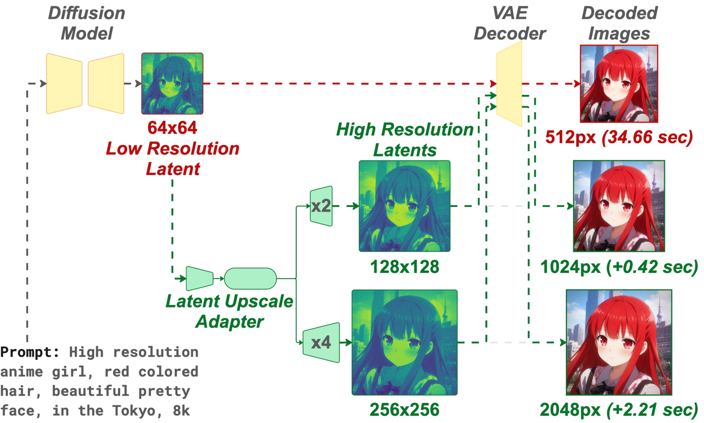
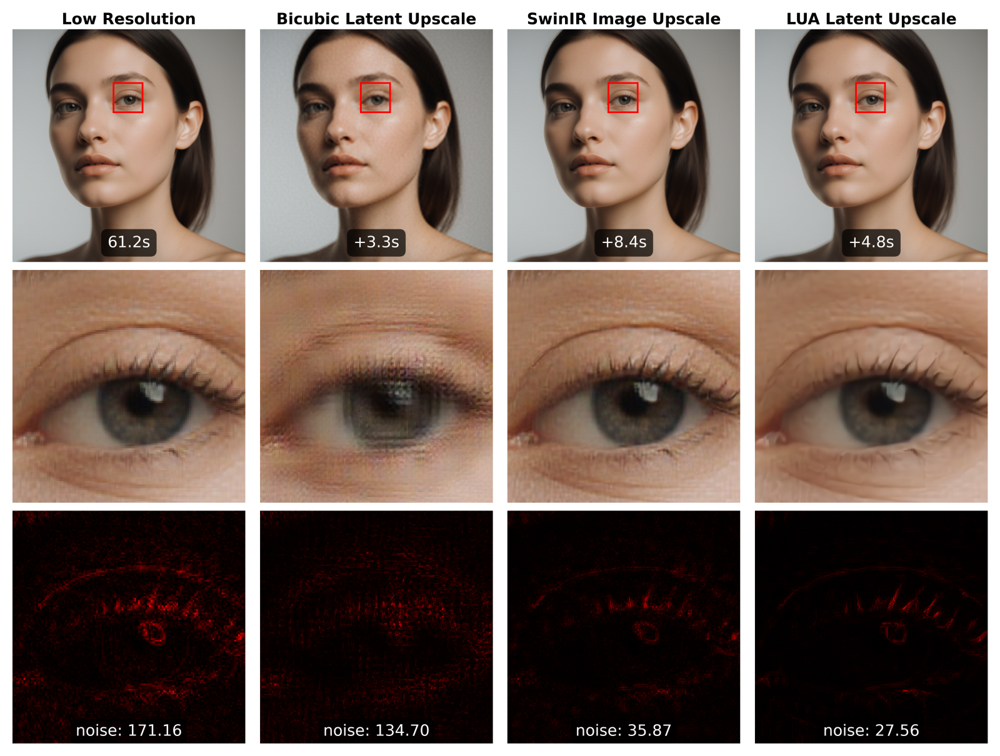
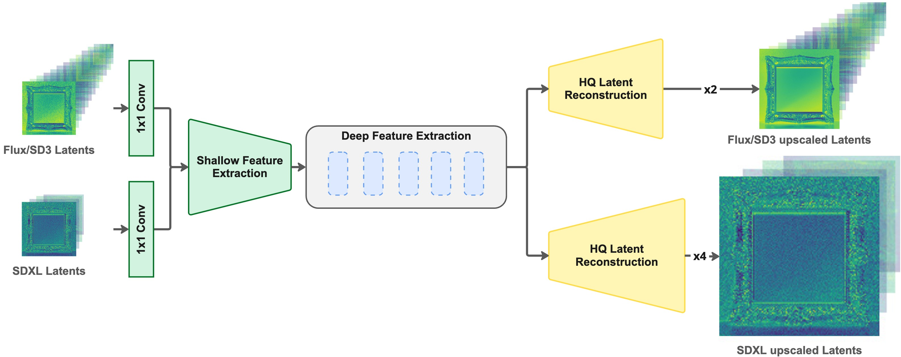
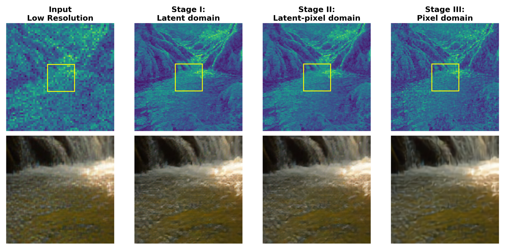
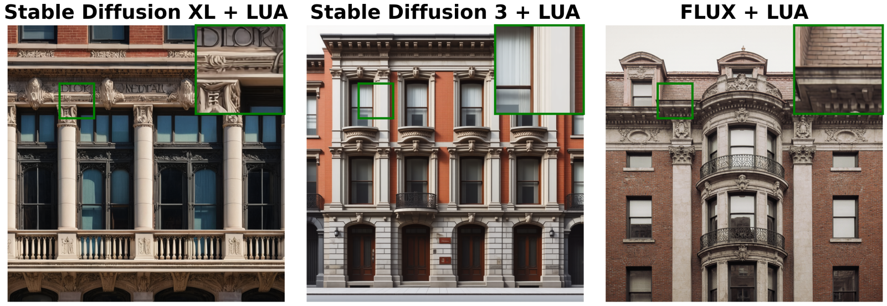
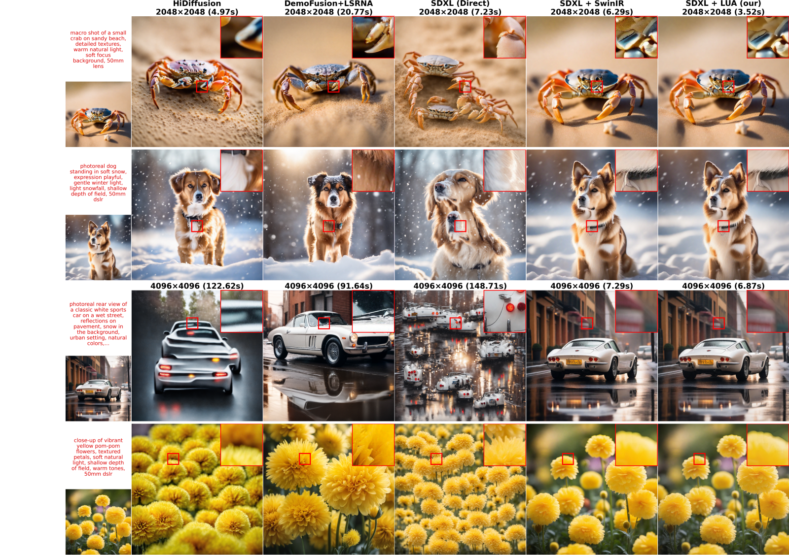
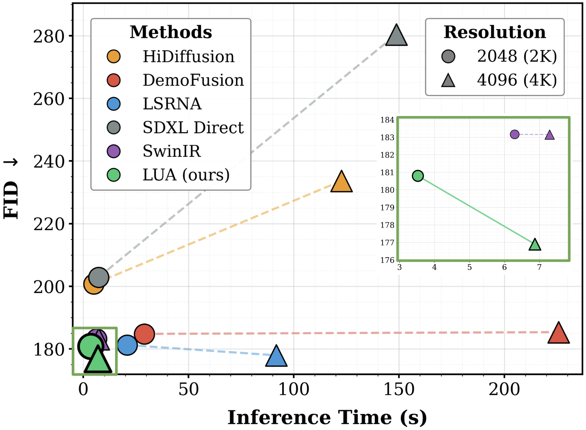
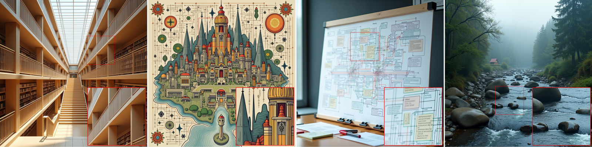

Upscale in latent space, not pixels — single-pass, ~3× faster high-resolution synthesis.
1 INSAIT, Sofia University “St. Kliment Ohridski”, Bulgaria · 2 Independent Researcher, Yerevan, Armenia · 3 iMak AI Lab, Ngerulmud, Palau
★ Equal contribution · † Corresponding author

Generating high-resolution images with latent diffusion models is limited by the cost of high-resolution denoising, while post-hoc super-resolution introduces artifacts and additional latency by operating after decoding. We present the Latent Upscaling Adapter (LUA), a lightweight module that performs super-resolution directly on the generator's latent code before the final VAE decoding step. LUA integrates as a drop-in component requiring no modifications to the base model or additional diffusion stages, enabling high-resolution synthesis through a single feed-forward pass in latent space.
A shared Swin-style backbone with scale-specific pixel-shuffle heads supports ×2 and ×4 factors with nearly 3× lower decoding and upscaling time. Because LUA operates directly on latents, it transfers across diffusion systems — including SDXL, SD3, and FLUX — through architecture-level reuse, adapting only the input convolution with brief fine-tuning rather than retraining from scratch. Extensive experiments demonstrate that LUA closely matches the fidelity of native high-resolution generation at 2K and 4K while offering a practical and efficient path to scalable image synthesis.
One lightweight adapter — three things it gets right.
Super-resolution in the compact latent — not over 64× more pixels. Quality comparable to modern high-res diffusion pipelines at 2K/4K, cleaner and faster than pixel-space SR.
A single Swin-style backbone with jointly trained, scale-specific heads serves both ×2 and ×4 — no separate model per factor, no retraining from scratch.
The same backbone runs on SDXL, SD3, and FLUX by swapping only the first convolution to match latent channels, then briefly fine-tuning — reuse, not retrain.
Post-hoc pixel super-resolution amplifies noise and adds latency after decoding. Upscaling the latent keeps detail clean and the pipeline single-pass.

LUA sits between the generator and the VAE decoder. It takes the low-resolution latent, upsamples it (×2 / ×4) in one feed-forward pass, and a single decode produces the high-resolution image.


The same LUA backbone upscales latents from SDXL, SD3, and FLUX — change only the input convolution and fine-tune briefly.

Cleaner textures, native-level fidelity, and the lowest latency among compared methods at 2K and 4K.

| Method (SDXL base) | Resolution | Time ↓ | FID ↓ |
|---|---|---|---|
| SDXL + LUA | 2048² | 3.52 s | 180.80 |
| SDXL + SwinIR (pixel SR) | 2048² | 6.29 s | 184.80 |
| SDXL direct | 2048² | 7.23 s | 207.40 |
| LSRNA-DemoFusion | 2048² | 20.77 s | 181.24 |
| SDXL + LUA | 4096² | 6.87 s | 176.90 |
| SDXL direct | 4096² | — | 280.42 |
| LSRNA-DemoFusion | 4096² | 91.64 s | — |
OpenImages test set. Lower is better. Full tables, pFID/KID/CLIP, and FLUX/SD3 results are in the paper.

Base decode vs. LUA upscaling. Drag the handle to reveal the difference.
ⓘ Placeholder demo. Swap in a real base-vs-LUA crop pair at
static/images/slider/ (see the comment in index.html).
LUA generalizes across content domains, not just natural images.

Add a grid of more 2K/4K examples here. Convert
figures/supplementary/flux_2k_1.pdf / flux_2k_2.pdf to PNG and replace
the cells below, or delete this block if not needed.
Optional: a short autoplay clip of the latent upscaling pass (low-res latent → LUA → decoded
4K). Drop it at static/videos/demo.mp4 and swap in a <video> tag.
LUA is a deterministic adapter — it faithfully upscales what the generator produced, including its mistakes.
arXiv: 2511.10629. To appear at ECCV 2026.
@inproceedings{razin2026lua,
title = {{LUA}: Latent Upscaling Adapter for Diffusion-Based Image Synthesis},
author = {Razin, Aleksandr and Kazantsev, Danil and Makarov, Ilya},
booktitle = {Proceedings of the European Conference on Computer Vision (ECCV)},
year = {2026}
}
@article{razin2026lua_arxiv,
title = {{LUA}: Latent Upscaling Adapter for Diffusion-Based Image Synthesis},
author = {Razin, Aleksandr and Kazantsev, Danil and Makarov, Ilya},
journal = {arXiv preprint arXiv:2511.10629},
year = {2026}
}